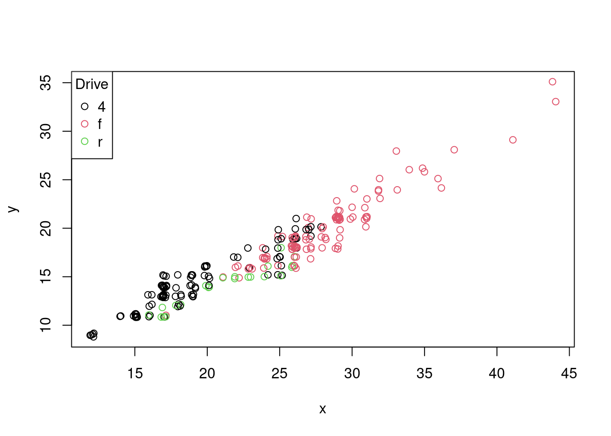

data(mpg, package = "ggplot2")
str(mpg)Classes 'tbl_df', 'tbl' and 'data.frame': 234 obs. of 11 variables:
$ manufacturer: chr "audi" "audi" "audi" "audi" ...
$ model : chr "a4" "a4" "a4" "a4" ...
$ displ : num 1.8 1.8 2 2 2.8 2.8 3.1 1.8 1.8 2 ...
$ year : int 1999 1999 2008 2008 1999 1999 2008 1999 1999 2008 ...
$ cyl : int 4 4 4 4 6 6 6 4 4 4 ...
$ trans : chr "auto(l5)" "manual(m5)" "manual(m6)" "auto(av)" ...
$ drv : chr "f" "f" "f" "f" ...
$ cty : int 18 21 20 21 16 18 18 18 16 20 ...
$ hwy : int 29 29 31 30 26 26 27 26 25 28 ...
$ fl : chr "p" "p" "p" "p" ...
$ class : chr "compact" "compact" "compact" "compact" ...x <- jitter(mpg$hwy)
y <- jitter(mpg$cty)
z <- factor(mpg$drv)
plot(x, y, col = z)
legend("topleft", legend = levels(z), col = 1:nlevels(z), pch = 1, title = "Drive")